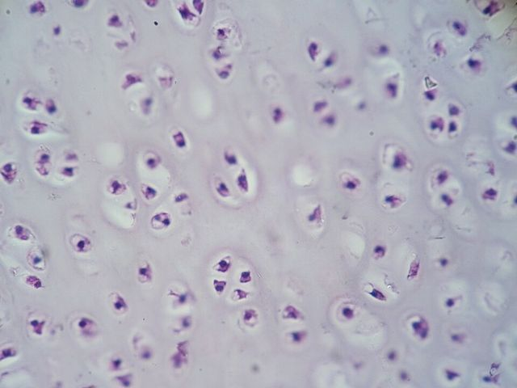
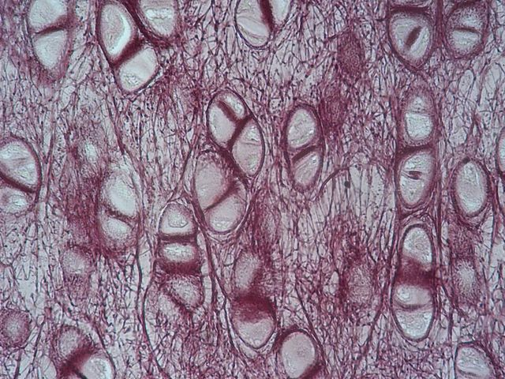
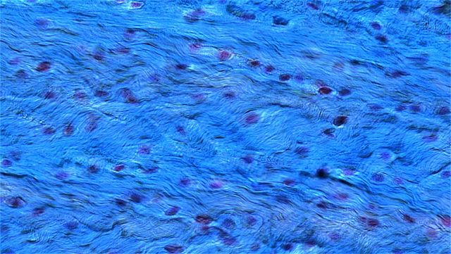

Cells, fibres and ground substance
Schematic, not to scale.
Under the electron microscope
Schematic drawings of what the electron microscope shows, not to scale.
Kinds of connective tissue
Collagen
Why collagen fibrils are banded
Cartilage
Schematic, not to scale. Tap a type.
Cartilage under the light microscope



Tendon, aponeurosis, ligament
Muscle Tissue has a table of named aponeuroses.
Fascia
Modifications of the deep fascia
Where the fat goes: women and men
Fascial sheaths and the investing layer
Deep fascia, venous return and compartment syndrome
Schematic, not to scale.
Around joints and tendons